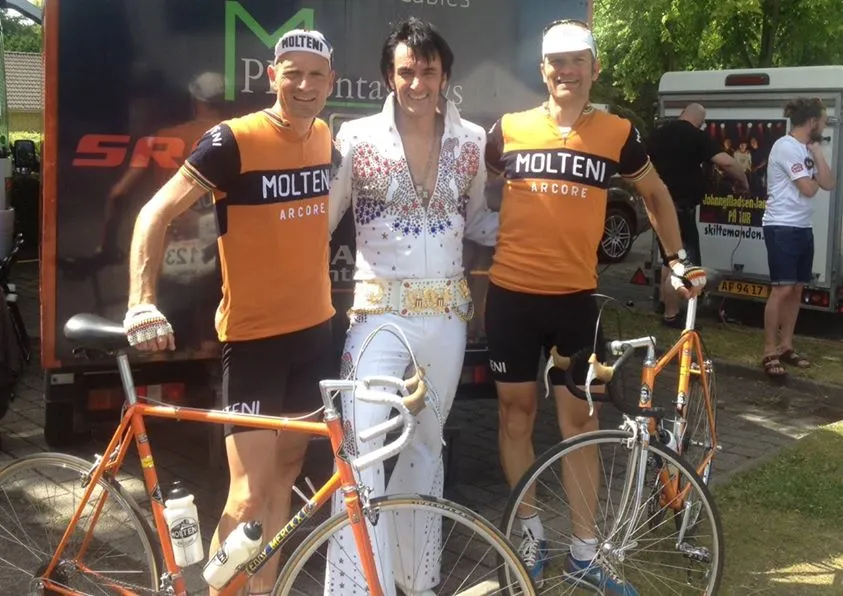

Løbsberetning: Fyen Rundt 2014 – Squadra Molteni smadrede Fyn!

Klokken er 06.00. Det er skyfrit og Pers Volvo sætter kursen mod Odense. Forude venter danmarks ældste – og verdens 3. ældste cykelløb: Fyen Rundt.
Vi har selvfølgelig valgt den klassiske distance på 180 km. Niels nåede ikke at tilmelde sig inden tilmeldingsfristen udløb. Så han skrev til Fyen rundt, og forklarede, at Squadra Molteni havde brug for lidt velvillighed.
Lynhurtigt var der svar fra Fyen Runds sekretariat. Ingen problemer. Der ville ligge et startnummer klar søndag morgen. Sådan! Super flot service.
Og ved tjek-ind bliver vi for anden gang imponerede over den effektivitet og den tjekkede måde, som Fyen Rundt bliver drevet på.
Ingen kø ved nummerudlevering. Søde og venlige mennesker ved skrankerne. Fantastisk.
Starten er altid gambling
Vi skulle starte klokken 08:12, som 4. startgruppe på 180 km ruten – i et startfelt på ca 75 ryttere.
Motionsløb i startfelter er altid lidt gambling: Kommer man i et godt og tilpas hurtigt startfelt? Vores startfelt var perfekt.
Hurtigt fandt vi ud af, at her var der rigelig med ryttere, som ville give den gas. Fuld gas! Vi nærmest fløj hen over det sydøstlige Fyn med 45 km. i timen. De 3 forrige startgrupper bliver æd ét efter ét.
Vi kommer til Ringe på lige under en time (38 km) – og fortsætter det vilde ridt ned sydover mod Svendborg. Vi hamre gennem det maleriske fynske landskab i bagende sommersol.
Fyen Rundt er snoede sogneveje med 50 km./t
Den ene lille lækre idylliske by med bindingsværkhuse, stokroser, gadekær og en lille kirke dukker op, som perler på en snor, som kun Fyen Rundt kan byde på.
Sognevejene snor sig og går let op og ned. Flere gange går tempoet vildt i vejret. Total kamikazeudbrud i 4 – 5 minutter. I nærheden af 50 km/t. Benene går som trommestikke i vores tungeste gear 53/13.
Vi er i Svendborg på under 2 timer (73 km). Der, midt i byen, rammer vi den første bakke. Føj for den lede. Den trak søm ud hos Niels. Per lå næsten helt oppe foran! Lidt efter kører Niels op på siden af Per.
– Du er sku godt kørende i dag – Tja – men jeg har fundet fidusen! – Hvordan det? – Jo – man udser sig den mest erfarende rytter. Én med overblik og ro. Helst en tidligere professionel TWM og US Postal-rytter. Han ved hvor man skal placere sig – og hvornår , siger Per.
Vi er begge meget imponerede over Peter Meinerts måde at køre på. Det er godt nok en del grå hår siden, at Peter kørte som professionel, men han har stadig dét dér overblik.
Den dér ro. Og det ser så legende let ud. Efter Svendborg kørte vi vestpå mod Fåborg. Her var der lidt modvind – og tempoet faldt lidt. Ikke flere kamikazeudbrud.
Vi ramte Fåborg (100 km) efter godt 2,5 time. Benene var stadig gode. Energiniveauet var stadig højt. Og vi vidste hvad der ventede forude … Svanninge Bakker! Jo vist, der er smukt. Men de gør ondt! Første bakke kom efter godt 108 km.
En lang satan, hvor der selvfølgelig holdt en stor mother-fucker-traktor og spærrede det meste af vejen på toppen.
Næste bakke kom 4-5 km længere fremme. Ved begge bakker hang Per flot med i den forreste del af feltet. Niels udforskede den bagerste del! Og måtte begge gange efterfølgende køre et 200-300 meter hul ind. Men det gik.
Efter Svanninge Bakker faldt der igen en smule ro på feltet
Nok ro til, at Niels kunne køre helt frem – og så et lyn fra en klar himmel – køre surten hjem i Glamsbjerg.
Ikke mange i feltet vidste det, men Glamsbjerg giver 220 UCI-point og en kasse æblemost! Småkage! Efter 140 km ramte vi en stor skov, hvor vejen gik op og ned og sving og op og ned og sving … og pludselig var vi på vej ind med Krengerup Gods.
Og med 40 km/t rammer vi gods-alléen, som er belagt med toppede brosten. Vi hopper og danser gennem en port, over gårdspladsen og ud gennem en ny port.
Stålcyklerne smilede til os! Vi fortsatte mod Tommerup – og vi passerede Lilleskov Teglværk, og det er næsten blasfemi, at hamre forbi det smukke teglværk med over 40 km/t.
Men det må blive en anden dag! Og efter Tommerup begyndte nedtælingen til den indlagte bakkespurt ved Vissenbjerg: 1200 meter á 4-8%. Per hamrede op sammen med de forreste.
Men Niels måtte slippe feltet – igen! Denne gang lykkedes det desværre ikke at køre op til feltet igen – da der gik væddeløb i dén, de sidste 20 km mod Odense.
Bakkespurt Per: 2:47 min – placering mænd: 20 Bakkespurt Niels: 3:08 min – placering mænd: 82 De sidste 20 km mod Odense sidder Per med de forreste – og i opløbet får han klemt sig ind som nummer 13 – i tiden 4:47:43 (37,54 km/t).
Niels får dannet en 7 mandsgruppe, der jagter feltet – med de nå aldrig op. Niels kommer ind som nummer 29 i tiden 4:52:03 (36,98 km/t).
Resultater: http://www.sportstiming.dk/Results/IndividualResults.aspx?Id=852&theme=fyenrundt
Epilog: Det var et fantastisk løb.
Alt spillede og det gamle stål fik én over nakken – og lige meget hvad, så spandt de som misser! Heldigvis synes 90% af alle carbon-motionister, at det er totalt sejt og god stil, at to vintage-ryttere på stål-cykeler og klædt i merinould kører lige op med dem og deres 30-70.000 kroners-cykler.
Vi fik enormt mange positive tilkendegivelser – både før, under og efter løbet.
Selv Elvis var vilde med os – og spurgte pænt, om han måtte blive fotograferet med os.

Tak til Fyen Rund for et helt igennem fantastisk løn, set-up og vild god service. Vi kan kunne næsten ikke få armene ned.
Da man ruller i mål – kommer der friske Jolly Cola piger løbende med iskolde cola’er til én.
Og i målområdet var der to kæmpeburgere til hver rytter. Det gøres bare ikke bedre.
Tak til Peter Meinert. Det er en fornøjelse at se dig køre.